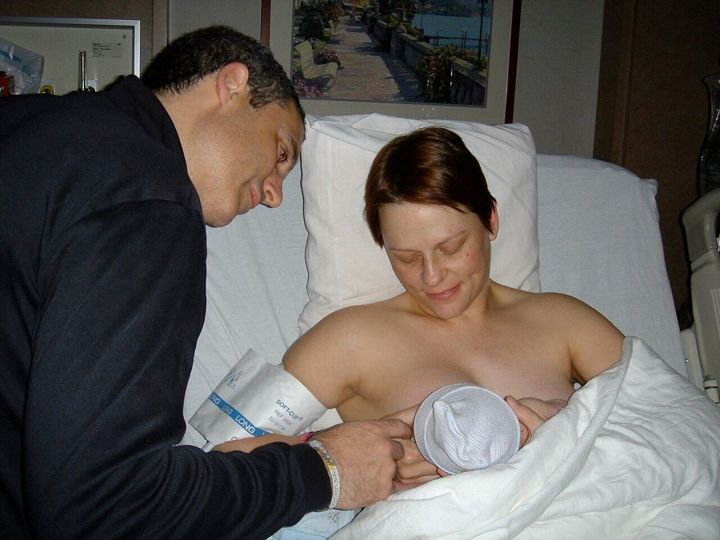

أول الأيام: شنو تتوقعين من الحليب
اللبأ: أول تطعيم من عندج
قليل بس مليان أجسام مضادة، ويطلع العقي. لا تبدلينه بماي أو سكر أو أعشاب. وإذا طلع وردي خفيف، يصير أحياناً من تشقق أو احتقان وما يمنع الرضاعة، وإذا استمر أكثر من يومين اسألي الدختور. والحليب الناضج الخفيف مو «حليب ضعيف».
كم يرضع يوم بيوم؟ اختاري عمره
أرقام الأيام 1–4 من بروتوكول ABM رقم 3، والحفاظات من AAP. اليوم 5 وطالع تقريبي. الأرقام بين القوسين لياهل وزنه 2.8–3.3 كغ. الإدرار ممكن يتأخر شوي بعد القيصرية أو أول ولادة.
من عندنا بالخليج
في الكويت (1,484 أم) 98.1% بدوا رضاعة، بس 26.5% طلعوا من المستشفى على الصناعي بالكامل. يعني نبدأ أبطال ونطلع ومعانا علبة حليب وبطل وخالة تشرح. واللي حصلوا إرشاد من التمريض كانوا أكثر بـ 2.5 مرة يكملون. وفي قطر «الإحساس إن الحليب ما يكفي» كان أول سبب لترك الرضاعة (44%).
متى يرضع؟ (جواب مختصر: وايد)
8–12 مرة كل 24 ساعة على الأقل
يعني كل 1.5–3 ساعات من بداية الرضعة لبداية اللي بعدها، حتى الساعة 3 الفجر. إي نعم، الساعة 3 الفجر.
- لا تنطرين الصياح. الصياح علامة جوع متأخرة، ووايد مواليد يرقدون رقدة طويلة أول 24–48 ساعة كأنهم راجعين من دوام.
- ليلة اليوم الثاني غالباً يبي يرضع ورا بعض لساعات (Cluster feeding). هذا طبيعي ويحفز الإدرار. هذا الياهل قاعد يقدم «طلب توريد» للمصنع، مو يشتكي إن البضاعة ناقصة.
- إذا مرت 3 ساعات من بداية الرضعة اللي قبل، قعديه ورضعيه، لين يرجع لوزن الولادة. بعدين امشي على طلبه.
علامات الجوع
والعمة اللي تقول «لا تعودينه على الصدر، بيدلع»: ياهل عمره يومين ما يعرف يدلع، يعرف يجوع بس.
فيديوهات أول ساعات بعد الولادة
المسكة خطوة بخطوة
إذا مسك صح، الحليب يطلع زين والحلمة ما تتعور. هالخطوات تمشي عليها الأم، أو أي أحد يساعدها.

وإذا يعور وأحد قال «عادي تحملي، كلنا تعورنا»، هذا مو دليل علمي، هذي ذكريات حرب. العوار معناه المسكة غلط، نقطة.
تمرين: صح ولا غلط؟
شوفي كل صورة وقرري.
إذا الهالة قاسية أو منفخة: الضغط العكسي
من الاحتقان أو من المغذي وقت الولادة، الهالة تقسى والياهل يزلق عليها. هالحركة تلينها:
- حطي أطراف أصابعج حول قاعدة الحلمة على شكل دائرة.
- اضغطي لداخل صوب صدرج، ضغط ثابت بدون ألم، وعدي لين 50 (حوالي دقيقة).
- رضعيه على طول، لأن الليونة تقعد 5–10 دقايق بس.
ممكن تحتاجينها كل رضعة لمدة 2–4 أيام. لا تسوينها إذا فيه التهاب بالثدي أو خراج أو قنوات مسدودة.
أشكال الحلمة
شكل الحلمة وحجمها ما يأثرون على كمية الحليب، والياهل يمسك الحلمة والهالة مع بعض، فأغلب اليهال يرضعون مهما كان الشكل. والمسطحة والغائرة غالباً تطلع أكثر مع الرضاعة. (WIC، وزارة الزراعة الأمريكية)
رسم الأشكال الثلاثة موجود عند Cleveland Clinic.
فيديوهات المسكة
الوضعيات اللي تناسب المولود
في كل وضعية: بطن لبطن، وراسه وجسمه على خط واحد، وخشمه مقابل الحلمة، وأنتِ مسنودة. لا تنحنين، قربيه هو.
صور حقيقية لكل الوضعيات موجودة عند Mayo Clinic وCleveland Clinic (صورهم محفوظة الحقوق فما حطيناها هني).
وضعية القعدة (الكوالا) للياهل الأكبر اللي يمسك راسه، مو للمولود. (Cleveland Clinic)
والكوالا للمولود؟ المولود مو دب أسترالي. خليه بطن لبطن لين يكبر ويمسك راسه.
شلون أعرف إنه قاعد يرضع صج؟
- المص: يبدي سريع، وبعدين يصير طويل وبطيء مع وقفات.
- البلع: تسمعينه أو تشوفين حركة تحت أذنه وذقنه. يوضح عادة من اليوم 3–4.
- المدة: غالباً 5–30 دقيقة، ويترك الثدي بروحه. (وزارة الصحة السعودية)
- الثدي: يصير أخف بعد الرضعة.
- ما يعور: إذا الحلمة تعور، المسكة غلط (المرحلة 3).
واللي يقول «شوفي ما يبلع، حليبج كله ماي» ما سمع بلع بحياته، بس سمع عن البطل.
يمص مرتين وبعدين يوخر ويبكي؟
| السبب | شلون تعرفينه | شنو تسوين |
|---|---|---|
| الحليب ما نزل للحين | يهدى بعد ما ينزل الحليب | اعصري قطرات قبل، واضغطي الثدي وهو يرضع |
| تعود على السرنجة أو الببرونة | يعصب من بطء الثدي | المكمل على الثدي مو قبله (المرحلة 8) |
| مسكة سطحية | الحلمة تعور أو تطلع مفلطحة | فكيه وعيدي المسكة |
| دز راسه من ورا | يدفع راسه لورا | امسكيه من الكتوف |
| غازات | يهدى بعد ما تطلعينها | طلعي الغازات وكملي |
| جوعان وايد أو نعسان | صياح، أو مصتين وينام | رضعيه أول ما يجوع |
| خشم مسدود، احتقان، عورة من الولادة، لسان مربوط | يصير على ثدي واحد أو كل رضعة | جربي وضعية ثانية، وروحي لأخصائية رضاعة |
إذا صار كل رضعة، أو الحفاظات أقل من الجدول، أو الياهل نعسان وايد أو مصفر، روحي لأخصائية رضاعة أو الدختور.
شلون أعرف إنه شبع؟
- يترك الثدي بروحه، أو المص يصير خفيف بدون بلع.
- إيدينه مفتوحة ومرتخية (الجوعان قبضته مسكرة).
- جسمه رخو ووجهه هادي، ووايد مرات يرقد.
- الثدي أخف وألين.
«يمص إيده! يعني جوعان، عطوه بطل». يمص إيده لأنه ياهل اكتشف إن عنده إيد، مو لأنه مضرب عن الطعام.
مكتفي باليوم كله؟ اسألي الحفاظة مو العمة
الرضعة الوحدة مو مقياس. المقياس:
- الرضعات: 8–12 مع صوت بلع.
- الحفاظات المبللة: وحدة باليوم الأول، ثنتين بالثاني، ثلاث بالثالث، أربع بالرابع، و6 أو أكثر من الخامس مع بول صافي.
- البراز: من الأسود للأصفر بحدود اليوم 4–5.
- الوزن: ينزل أقل من 7–10%، ويرجع لوزن الولادة بحدود الأسبوعين (بالمعدل اليوم 8، وأغلبهم بين 7 و14).
كل المواليد ينزل وزنهم، وأقل وزن باليوم 2–3، لأنهم يتخلصون من السوايل والعقي. المعدل عند اللي يرضعون زين 5.5–6.6% (ABM).
حاسبة نزول الوزن
القيصرية والمغذي ممكن ينفخون وزن الولادة، فيبين النزول أكبر، والدكاترة يستخدمون أداة NEWT عشان يفرقون. ومن اليابان (399 مولود): معدل النزول 9.4%، و41% نزلوا 10% أو أكثر. البكرية (2.7 مرة) والقيصرية قبل الطلق (مرتين) زادوا النزول، فهذولي يبيلهم متابعة وزن أدق. اطلبي يوزنونه بزيارة اليوم 3–5 (AAP).
إذا ما كفاه: الحليب الصناعي، متى دوا ومتى «فزعة»
أول شي، وبكل جدية
الصناعي مو شين إذا الياهل محتاجه صج. الأم اللي دختورها كتب لها مكمل لسبب طبي أم بطلة، ولا أحد له حق يحاسبها. الطقطقة اللي تحت حق اللي يبي يعطي بطل «احتياط» بس لأن اللبأ «يبين قليل».
المولود السليم ما يحتاج مكمل بس لأن رضاعته قليلة أول 24–48 ساعة. القرار للدختور بعد الفحص. (ABM)
ما يحتاج مكمل إذا:
ممكن يحتاج (بقرار الدختور)
| من جهة الياهل | من جهة الأم |
|---|---|
| سكر نازل مثبت بالتحليل وما يتحسن بالرضاعة | الإدرار تأخر لليوم 3–5 أو بعده والياهل ما ياخذ كفاية (بقايا مشيمة، متلازمة شيهان، نقص أنسجة الثدي، أقل من 5% من الحريم) |
| جفاف واضح (نزل حوالي 10%، صوديوم عالي، خمول) | عملية سابقة بالثدي |
| نزل 8–10% والإدرار تأخر لليوم 5 | ألم ما ينحمل مع إنها حاولت تعالجه |
| العقي مستمر أو البراز متأخر باليوم 5 | بعيدة عن الياهل، أو مريضة، أو دوا يمنع الرضاعة |
| الحليب موجود بس ما يوصله (مسكة)، أو صفار مع قلة رضاعة ما تحسنت |
ليش لا بدون سبب؟
- يقلل الحليب: الصناعي يشبعه أطول، فيرضع أقل، فالثدي ينتج أقل. هالدوامة أشهر سبب لـ«نشفان الحليب».
- يأخر الإدرار ويسبب احتقان.
- يغير بكتيريا الأمعاء، ويعرضه بدري لبروتين حليب البقر.
- يزيد الإسهال والالتهابات.
- ممكن يزهد بالثدي لأن البطل أسهل.
- يهز ثقة الأم ويقصر مدة الرضاعة.
- الماي أو ماي السكر أسوأ: يزيد الصفار ونزول الوزن.
يعني «بطل صغير بس عشان ترقدين» مو هدية، هذا قسط أول بقرض طويل. والبطل «احتياط» مثل إنك تمشي على الإطار الاحتياط على طول، وبعدين تستغرب ليش الإطار الأصلي نام.
وأشهر تأليف: «حليبج خفيف، شوفي لونه». الحليب مو شاي كرك عشان نحكم عليه من لونه.
إذا لزم المكمل صج
الترتيب: حليب الأم المعصور، بعدين حليب متبرعة مبستر إذا موجود، بعدين صناعي. الكمية حسب عمره بالأيام (جدول المرحلة 1).
الطريقة: ملعقة أو كوب أو سرنجة أو أنبوب على الثدي، مو الببرونة.
الثدي أول دايماً. وأحسن شي تعطينه بالسرنجة وهو ماسك الثدي: حطي طرفها بزاوية ثمه ونزلي الحليب بس لما يمص. أو أنبوب رفيع جنب الحلمة (SNS) تركبه أخصائية الرضاعة. وبعيد عن الثدي: خليه يمص صبعج ونزلي الحليب جنبه ببطء. لا تبخينه بحلجه.
كملي عصر بعد الرضعات عشان ما يقل حليبج. ولا توقفينه بروحج إذا الدختور كاتبه لسبب طبي. وإذا كان احتياط، اتفقي على خطة تخففينه تدريجياً.
العصر والشفاط: مو كل أم تحتاج مكينة
إذا الياهل ويا أمه ويرضع زين 8–12 مرة، ما يحتاج شفاط أول الأيام. في دراسة صينية (468 أم بعد القيصرية) الإدرار تأخر عند 33%، وكل رضعة زيادة أول 48 ساعة قللت التأخر. والشفاط بدون حاجة ممكن يسبب احتقان.
| الحالة | متى تبدين | كم مرة |
|---|---|---|
| الياهل بالعناية المركزة أو بعيد | خلال أول ساعة إذا تقدرين (يعطي حليب أكثر من البداية بعد 1–6 ساعات) | 8 مرات أو أكثر باليوم، منها مرة بالليل |
| معاج بس ما يمسك أو ما يرضع زين | من اليوم الأول | بعد كل رضعة مو زينة، وعطيه بالملعقة |
| الإدرار تأخر أو بدا مكمل | مع المكمل | بعد كل رضعة 10–15 دقيقة |
| بعد القيصرية | إذا تأخرت أول رضعة أو الرضعات قليلة | رضاعة وايدة أول، والعصر تعويض |
| تبين تخزنين حليب | بعد ما تستقر الرضاعة (3–4 أسابيع) | مرة باليوم بعد رضعة الصبح |
- أول يومين العصر باليد أحسن، لأن اللبأ قليل ويضيع بأنابيب الشفاط. جمعيه بملعقة أو سرنجة. من اليوم 3 الشفاط المزدوج أفيد.
- أعصر وما يطلع شي؟ كملي. الهدف أول يومين ترسلين إشارة للجسم، مو تجمعين كمية.
- الجلسة: 10–15 دقيقة، بقمع على مقاسج وشفط ما يعور، ولا تخلين فجوة أطول من 5–6 ساعات بالليل إذا معتمدة على الشفاط.
- من السعودية: في تبوك (671 أم) أمهات القيصرية كانوا أقل بوضوح ببداية الرضاعة خلال 48 ساعة.
شفاط بـ 200 دينار عشان يطلع 3 قطرات أول يوم؟ يدج ببلاش وتطلع نفس الثلاث قطرات، وأحياناً أكثر.
المصاصة: الياهل مو محتاج «كورس» مص
أجليها لين تستقر الرضاعة ويرجع لوزن الولادة (عادة 3–4 أسابيع)، لأنها:
- تغطي على علامات الجوع فتروح رضعات.
- ما تحفز الثدي.
- أول الأيام كل رضعة تفرق بالوزن والصفار.
- والمص ما يحتاج تدريب، شي فطري.
للأمانة العلمية
مراجعة كوكرين (2016) ما لقت إن المصاصة غيرت الرضاعة الخالصة لين 4 شهور عند أمهات متحمسات للرضاعة. فهي مو ممنوعة، بس التأجيل أضمن، خصوصاً إذا الياهل نعسان أو وزنه نازل أو مصفر. وإذا استخدمتيها: بعد الرضعة مو بدالها، وبدون عسل أو سكر.
المصاصة أول أسبوع مثل إنك تعطي واحد جوعان علك وتقول له «تونس فيه لين يجي الغدا».
واللي يقول «حطوا له مصاصة يتعود من الحين»، يتعود على شنو بالضبط؟ على إنه يصيح جوعان ويعطونه بلاستيك؟
الأم: لأن المصنع يحتاج صيانة
واللي يقول «اشربي حلبة وكمون وماي ورد ونص الجمعية»: ماكو أكل يدر الحليب. المصنع يشتغل بالطلب، مو بالبهارات.
الصفار، ومتى تخلين السوالف وتروحين الدختور
الصفار: شائع باليوم 2–5. الرضاعة 8–12 مرة تطلعه مع البراز. لا ماي ولا ماي سكر، ولا تعتمدين على الشمس.
روحي الدختور على طول إذا:
- أقل من 6 رضعات باليوم، أو ما يقعد للرضاعة، أو جسمه رخو.
- الحفاظات أقل من الجدول، أو بول غامج أو بلورات حمرا بعد اليوم 3.
- البراز الأسود مستمر بعد اليوم 4–5، أو براز أبيض أو باهت.
- صفار أول 24 ساعة، أو قاعد يزيد، أو نزل للبطن والرجول.
- نزل أكثر من 10%، أو ما رجع لوزن الولادة باليوم 14.
- حرارة 38 أو أكثر، أو برودة، أو صعوبة تنفس، أو زرقة، أو استفراغ أخضر.
- جفاف: ثم ناشف، نافوخ غاير، نعاس شديد.
- الأم: حرارة مع احمرار الثدي، نزيف شديد، أو أفكار تأذي نفسها.
وهني تنتهي الطقطقة: هالعلامات ما تنطر رأي الديوانية ولا تصويت القروب.
بعد الأسبوعين: حياتج الجديدة
- الوزن: يزيد حوالي 150–200 غ بالأسبوع أول الشهور (تقريبي).
- الحليب: يستقر حوالي 700–800 مل باليوم بعمر شهر (تقريبي).
- طفرات النمو (تقريباً الأسبوع 3 و6 والشهر 3): يبي يرضع أكثر. مو معناه الحليب ناقص، ومو سبب تبدين مكمل.
- البراز: بعد 6 أسابيع ممكن يقل وايد، وعادي دام الوزن والبول زينين.
- فيتامين د: القطرة اللي يكتبها الدختور (الشائع 400 وحدة باليوم)، مهم بالخليج حتى مع الشمس. ولا ماي قبل 6 شهور حتى بالحر.
الهدف (الصحة العالمية ووزارة الصحة السعودية): رضاعة خالصة 6 شهور، وبعدين مع الأكل لين سنتين أو أكثر. «والوالدات يرضعن أولادهن حولين كاملين» (البقرة: 233).
طفرة النمو مو «الحليب خف». الياهل بس قاعد يطلب زيادة إنتاج قبل التحديث الجاي.
بونص: تأليف ولا حقيقة؟ «المؤلفين» على المحك
قبل لا تصدقين أي نصيحة، اسألي سؤال واحد: مصدرها دراسة، ولا «وحدة قالت لأختي»؟
اختاري جوابج وشوفي النتيجة.
الاختبار النهائي: تبين الشهادة؟
عشر أسئلة. جاوبي 8 أو أكثر صح وتطلع لج شهادة «خبيرة رضاعة» تقدرين تتفشخرين فيها.
هذي شهادة إن
خلصت دليل الرضاعة وصارت خبيرة رضاعة، ويحق لها تسكت أي أحد يقول «عطوه بطل» بدون سبب طبي، بكل أدب طبعاً.